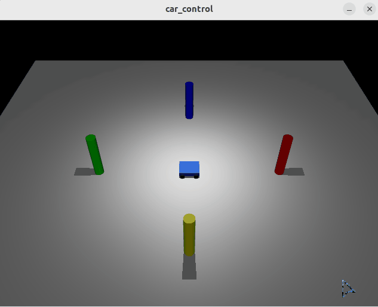

基于 Mujoco 的键盘遥控小车
一、实验目的
本实验基于 Ubuntu 22.04、MuJoCo 物理引擎和 Python 3，编写 Python 控制节点，实现一个四轮小车在复杂环境下的键盘遥控运动控制。
实验主要使用了 MuJoCo 的物理步进、图像渲染以及 OpenCV 的键盘事件捕获机制。
二、实验环境
| 项目 | 配置 |
|---|---|
| 操作系统 | Ubuntu 22.04 LTS（VMware 虚拟机） |
| 物理引擎 | MuJoCo (Python 3.10+) |
| 编程语言 | Python 3 |
| 依赖库 | mujoco, mujoco-python-viewer, opencv-python, numpy |
| 功能包 | mujoco_car_project |
三、功能包结构
mujoco_car_project/
├── CMakeLists.txt
├── package.xml
├── main.sh # 一键运行脚本
├── requirements.txt # 依赖清单
├── models/
│ └── car.xml # 小车物理模型文件
└── scripts/
└── main.py # 主控制程序
四、实现原理
程序读取：
利用 OpenCV 的 cv2.waitKey(1) 捕获键盘事件，获取按键状态。
程序输出：
将键盘按键映射为左右轮的速度指令，直接赋值给 MuJoCo 的电机控制数组 data.ctrl，通过 mujoco.mj_step 驱动小车运动。
- W / 向上键：向前行驶
- S / 向下键：向后行驶
- A / 向左键：向左转弯
- D / 向右键：向右转弯
- Q：退出仿真
小车采用差速驱动模型，左右轮速度 和 与两轮间距 、车轮半径 决定了小车的运动状态。小车线速度 与角速度 为：
在每次控制循环中，先将左右轮速度清零，再根据按键赋予速度，从而完全消除指令残留，实现“松开即停”的顺滑手感。
五、编译
首先进入工作空间：
cd ~/ros2_ws/src/ground/mujoco_car_project
安装依赖（或者直接运行 main.sh 自动安装）：
pip3 install -r requirements.txt
六、运行
可以直接一键运行（推荐）：
bash main.sh
也可以分别运行（需要先手动安装依赖）：
python3 scripts/main.py
七、实验结果
运行节点后，将会弹出一个 MuJoCo 渲染窗口，展示蓝色小车和地面参照物。按下 W/A/S/D 可以控制小车在平面上流畅运动，松开按键小车立即刹停。

八、总结
本实验通过编写 MuJoCo 控制和键盘监听脚本，实现了地面载具的物理仿真与实时遥控。实验掌握了 MuJoCo 的渲染与物理步进原理，理解了差速驱动模型的实际应用，并通过“松开即停”的清零逻辑，成功复刻了 ROS 小海龟的顺滑控制手感。
借助模型：Deepseek,豆包。